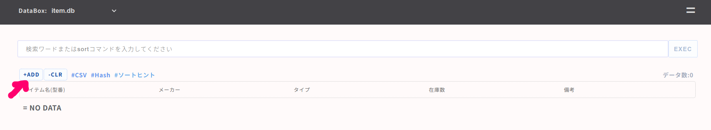
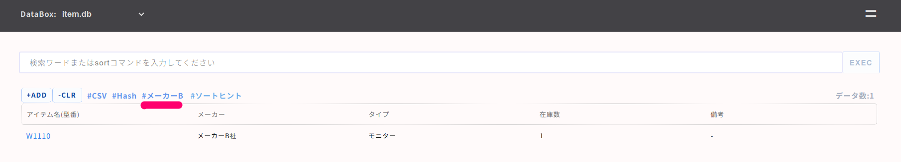
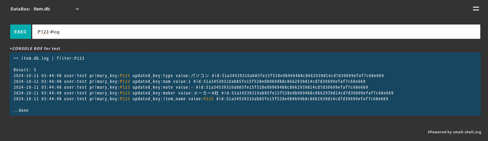
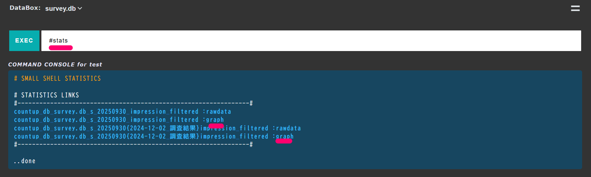

small shell Basic
フレームワーク
small shellはshell{bash}だけでWEB applicationプログラムを書くことができるようにした、特異なフレームワークです。フレームワークというのはある一定の枠組みに従って進めると、一定のアウトプットがでるような一連の手続きのことを指します。手続きといっても、そう難しいものではなく、small shellにおいてはただコマンドを並べるだけであったり対話式のコマンドに答えるだけでWEB applicationができあがります。
アプリケーションタイプ
small shellでは標準のWEBアプリケーション機能をパッケージ化したBase APPを対話式のコマンドで即座に生成することができます。Base APPに対してカスタマイズを行うことができるアプリケーションをScratch APPと呼んでいます。本コースではまずはBase APPの生成を通じて標準のWEBアプリケーションを理解いただきます
Base APPの利用シナリオ
Base APPはカスタマイズ不要な即席で生成できるWEBアプリケーションですが、WEBアプリケーション自体の特性であるデータの共有のしやすさや、オープンで共同作業をしやすいという性質を持ちます。その点においてチームによるデータ管理を行う際、Excel等のスプレッドシートよりも優れているといえるでしょう。Base APPは標準でAnd検索が可能で、Unix Basic 2コースでご紹介した高度なUnixコマンド群を使ったデータ分析も可能です。Formを用いることで外部からのデータ収集や依頼受付などもすることができます。さらに、small shellのAutomation機能を組み合わせれば定期的なグラフ作成などの分析作業の自動化も可能になります
標準機能
- 容易なデータ共有と同時編集
- And検索など優れた検索とUnixコマンドを用いた解析
- loggingとtracking
- Formを利用した外部データの収集
高度な連携
- システム統合(API,Job)
- python libraryを用いたgraphの定期作成
クイックスタート
OS setup
Base APPを立ち上げるために、まずはOSのセットアップを行っていきましょう。すでにubuntuの環境構築はUnix Basic 1コースで体験されていると思いますが、small shellをインストールするために最低限必要になるライブラリとWEBサーバをインストールしましょう。Base APPはWEBサーバ上で動くアプリケーションのため、WEB Basicコースでご紹介したapache WEBサーバを利用します。
ubuntu環境設定
# OSへのユーザーの追加
sudo useradd -s /sbin/nologin small-shell
# aptリストのアップデート
sudo apt-get update
# apacheのインストール
sudo apt-get install apache2
sudo a2enmod cgid
#sudo systemctl start apache2
sudo service apache2 start
sudo update-rc.d apache2 defaults
# 各種ライブラリのインストール
sudo apt-get install php
sudo curl -o /usr/bin/jq -L https://github.com/stedolan/jq/releases/download/jq-1.6/jq-linux64 && sudo chmod +x /usr/bin/jq
small shellのインストール
cd /usr/local
sudo git clone https://github.com/small-shell/small-shell.git
sudo chown -R small-shell:small-shell /usr/local/small-shell
Sudo設定の追加
# visudo editorの設定
sudo update-alternatives --config editor
# sudo設定
sudo visudo
# ファイルの最後尾に追記してください
www-data ALL=(small-shell) NOPASSWD: /usr/local/small-shell/bin/*, /usr/local/small-shell/sbin/*
Warning
もしもWSLをwindows上で利用している場合はwindowsを再起動してubuntuを起動した都度"sudo service apache2 start"にてapacheを起動してください。
Base APP生成
いよいよgenコマンドでBase APPを生成していきましょう、以下はwindows上にWSLとして構築したubuntu上でBase APPを生成する場合の例です。WSLとしてあくまでローカルに構築されているため、WEBサーバとしてはlocalhostを指定しましょう
# gen コマンド実行
sudo /usr/local/small-shell/adm/gen -app
Type of APP (1.BASE | 2.FORM | 3.SCRATCH): 1
Root directory of web (/var/www): <enter>
CGI directory (/usr/lib/cgi-bin): <enter>
APP exec user (e.g. www-data or apache or nginx): www-data
protocol (http | https): http
WEB Server FQDN or IP addr (e.g. 192.168.10.1): localhost
BASE URL for WEB APP is http://localhost/cgi-bin/ is it OK ? (yes | no): yes
www dir must have relation with CGI dir. Is it OK to make symbolic link on /usr/lib ?
following command will be executed
-----------------------------------------------------------------
ln -s /var/www/bin /usr/lib/bin
ln -s /var/www/descriptor /usr/lib/descriptor
ln -s /var/www/tmp /usr/lib/tmp
-----------------------------------------------------------------
(yes | no): yes
Base APPユーザー作成
続いてBase APPへアクセスするためのユーザーを作成しましょう、あなたが管理者の場合アプリ利用者の人数分ユーザー作成をしてください。以下ではtestというユーザーを作成しています。
sudo /usr/local/small-shell/adm/ops add.usr:test
コマンドが正常に実行されると、作成したユーザー向けのinitialize URLが生成されますのでユーザーへURLを展開してください。ユーザーが initialize URLへ接続した際にアプリへのアクセスを可能にする鍵が生成されます。その際、管理者でも鍵の配列は予想することができません。以下はユーザーがinitialize URLへアクセスした際の画面です。"OPEN DATA_BOX WITH KEY"というボタンを押すとBase APPへ接続がされ、Base APPが管理するDATA BOXへのアクセスが可能になります

Base APPログイン
OPEN DATA_BOX WITH KEYボタンを押すと、そのままログインフォームに鍵を選択することができますので、生成された鍵を選択してBase APPへログインしましょう。その際、Base APPのログインURLはブラウザのお気に入りに登録しておくことをお勧めします

Warning
鍵を選択してアクセスすると、"NO DATABOX, please create databox first"というメッセージが表示されるますが特に問題ありません。Base APPの管理対象となるDATA Boxがないために出ているワーニングですが、次章でData Boxを作成していけば解消します
Data構造の検討
BaseAPPは基本的にはDataBoxを管理するためのアプリケーションですが、DataBoxが作成されていないと何も操作することができません。DataBoxを作成し、BaseAPPを通じてデータ管理をしていきましょう
Primary Key
DataBoxではkeyとvalueという概念でデータを管理します。データは複数のkeyで構成され、登録されたデータはそれぞれ他のデータと識別するための一意なkeyを持ちます。例として在庫データを管理するDataBoxを作成してみましょう。非常にざっくりとした情報にはなりますが、メーカーAのノートパソコンが10台あるという状態を表現するとき、それを名前と数という2つのkeyから構成されるデータとして扱うことができます。その際、このデータを一意で識別するのは"メーカーAのノートパソコン"という漠然とした名前でも構いません。それが名前として重複しない限り、データとして問題なく管理ができます。その際、item_nameを識別のためのkeyとするのは自然なことですがそのように識別のために使われるkeyをprimary_keyと呼びます。
#在庫データ
key : item_name(primary_key),num
value : メーカーAのノートパソコン,10
もちろんitem_nameはそれ自体様々な情報を含んでいますので以下のように分解することもできます。以下例のようにデータ構造をより細かく矛盾なく分割して定義することにより、精緻なデータ管理が可能になります。一方で以下例ではpc_type {laptop or desktop}というkeyを含んでしまうことでPCの在庫はより精緻にできるようになったものの、PC以外の在庫管理が難しくなります。データをどの程度分解し、適切に管理するかというのはセンスのいる作業になります。
item_nameの正規化
key : item_name(primary_key), maker, pc_type, num, note
データの正規化は大規模なシステム開発においては非常に重要な作業になりますが、フラットな箱にデータを入れ直観的に管理したいというsmall shellの基本的なスタンスからすると少し重すぎる作業だともいます。いったん過度な正規化はここでは行わず、簡易的な補足がnoteで入れられるような緩いデータを扱うこととしましょう。また、keyは基本的には英数字しか扱うことができないため、誰にでも理解しやすいlabelを定義しましょう
フラットデータ構造
#在庫データ
key : item_name(primary_key),num,note
label : アイテム名,数量,メモ
value : メーカーＡのノートパソコン,10,来月10個使う
DataBox生成
データ構造を比較的緩めなものにすると決まったところで、さっそくDataBoxを生成していきましょう、再びgenコマンドで簡単に生成できます。DataBox自体の名前はわかりやすくitem.dbとして、在庫管理のために使ってみましょう
sudo /usr/local/small-shell/adm/gen -databox
対話例は以下のとおりです。Do you want to add more column to datase？と聞かれた際にnoと答えると対話が終了しデータボックスが生成されます, またrequired to input each time?と聞かれてyesと答えると必須の入力項目としてBaseAPPで扱われます
Note
対話を途中で抜けたい場合はCtrl + cを同時に押して抜けてください
databox_name: item.db
primary_key(col1): item_name
primary_key label: アイテム名
Do you want to add column to dataset ? (yes | no): yes
key(col2) name: num
key(col2) label: 数量
data type (text | select | radio | checkbox | email | num | tel | date | date-time | url | textarea | file | pdls | mls): num
required to input each time? (yes | no): yes
Do you want to add more column to dataset ? (yes | no) : yes
key(col3) name: note
key(col3) label: メモ
data type (text | select | radio | checkbox | email | num | tel | date | date-time | url | textarea | file | pdls | mls): text
required to input each time? (yes | no): no
Do you want to add more column to dataset ? (yes | no) : no
最終確認が求められるのでyesと答えてデータボックスを生成しましょう
Data box will be generated by following order, please check it
-----------------------------------------------------------------
databox_name:item.db
#primary_key
name="item_name"
label="アイテム名"
type="text"
option="required"
#column2
name="num"
label="数量"
type="number"
option="required"
#column3
name="note"
label="メモ"
type="text"
option=""
-----------------------------------------------------------------
Is it OK ? (yes | no): yes
DataBoxへのアクセス
DataBoxが生成されたら早速BaseAPPをつうじてデータへアクセスしましょう。WSL環境の場合は以下URLでアクセスができます。ログインURLで再度鍵を選択してログインしてみましょう、データボックスが表示されていることでしょう
http://localhost/cgi-bin/auth.shell

早速+Addリンクからアイテムを登録しましょう
Table管理
ログイン後に表示されるテーブルviewではデータの検索やソートが非常に簡単に行うことができます。標準でAnd条件の検索が可能ですのでGoogle検索のような感覚でデータを探すことができます。また、Unixのsortコマンドを使ったsortもTable上で可能ですのでお試しください。sortの基本的なオプションは以下です
sort
# 自然な昇順並び替え
sort -V Label名
# アルファベット降順並び替え
sort -r Label名
# 数字の昇順並び替え
sort -n Label名
# 数字の降順並び替え
sort -nr Label名

Tag
Tableに定型的なフィルターをかけたい場合Tagを追加することができます、以下例ではメーカーAというワードでtagを作っています
sudo /usr/local/small-shell/adm/ops add.tag:$databox{word}
(e.g.)
sudo /usr/local/small-shell/adm/ops add.tag:item.db{メーカーA}

Consoleによる分析
メニューからconsoleへ遷移すると、高度なUnixコマンドとして紹介した各種コマンドを使った分析ができます。以下はDataBoxをパソコンというwordでgrepし、件数をwcで集計しています

log検索
Consoleではlogの検索を行うこともできます、ログ検索であることを明示するため検索実行時は#logを付与してください、以下は "メーカーAノートパソコン #log"と検索した例です

フォームの利用の検討
BaseAPPにアカウントを持たない外部ユーザーから所定の入力項目をもとにデータを収集し、DataBoxに格納するために外部Formの作成をすることができます。ここでは外部ユーザーからの意見収集のためのアンケートformの作成を例としてご説明します。
アンケートBox作成
初めに収集したいデータを格納するDataBoxを作成しましょう、ここでは架空の製品である"XYZ"についての感想をアンケートとして収集しましょう。その際一意となるkeyは特に想定されないため、primary_keyはhashidとします
sudo /usr/local/small-shell/adm/gen -databox
Note
primary_keyをhashidとすることで一意のデータを持つkeyを作る必要がありません
databox_name: survey.box
primary_key(col1): hashid
! ここをhashidとしてください、その後は対話を続けてください
Data box will be generated by following order, please check it
-----------------------------------------------------------------
databox_name:survey.box
#primary_key
name="hashid"
label="#ID"
type="text"
option="required"
#column2
name="generation"
label="世代"
type="radio"
params="10-20代 30-40代 50-60代 60代以上"
option="required"
#column3
name="impression"
label="使ってみた印象"
type="radio"
params="良い 普通 悪い"
option="required"
#column4
name="comment"
label="コメントがあればお願いします"
type="textarea"
option=""
-----------------------------------------------------------------
Warning
日本語でparameterを定義する場合に、入力中にback spaceを使うとテキストが崩れるためnotepadなどに書いた内容をコピーペーストすることをお勧めします。その際パラメーターの区切りとしては全角スペースは使わず必ず半角スペースを使ってください
フォームの生成
DataBoxの作成に続いて、外部向けの入力フォームを生成しましょう、ここでもgenコマンドをお使いただきます
sudo /usr/local/small-shell/adm/gen -app
アプリケーションタイプとして2.FORMを選択し、名前は仮にsurveyとしましょう。DataBoxとしては先ほど作成したsurvey.boxを指定します
Note
IP whitelistingは接続可能なIPアドレスを制限するかという確認ですが、いったんnoとして作成します
Type of APP (1.BASE | 2.FORM | 3.SCRATCH): 2
form_name: survey
databox: survey.box
description of the form : xyzにつてのアンケートにお答えください
Do you want to enable IP whitelisting for this form ? (yes | no): no
select data that must be included in the form (generation | impression | comment) : generation
Do you want to add more data to the form (yes | no): yes
additional data that must be included in the form (impression | comment) : impression
Do you want to add more data to the form ? (yes | no): yes
additional data that must be included in the form (comment) : comment
form will be generated by following order, please check it
-----------------------------------------------------------------
APP type: 2.FORM
Form name: survey
target_databox: survey.box
description: xyzにつてのアンケートにお答えください
IP_whitelisting: no
Included keys: generation,impression,comment
Access URL: http://localhost/cgi-bin/survey
-----------------------------------------------------------------
Is it OK ? (yes | no): yes

BaseAPPで登録されたデータを見てみると、一意のIDも自動生成されていることが確認できます。hashidはBaseAPPのフォーム入力でも、外部のフォーム入力でも同じく自動で生成されます

テンプレートの利用
small shellの周辺プロジェクトとしてテンプレートがいくつか公開されています、ここではTeam APPをインポートして使ってみましょう。Team APPではチームの共同作業に必要な機能をパッケージ化したsmall shellフレームワークを利用したツールです。チームのカレンダー共有、ファイル共有、タスクの可視化、外部からの問い合わせ受付などが行えます。また、Team APPに管理したいDataBoxを追加することもできます
Team APP install
早速Team APPをインストールしましょう、git cloneした後deploy.shを実行するとDataBoxも自動生成されます
cd $HOME
git clone https://github.com/naruoken/small-shell-apps
cd small-shell-apps/team_app
sudo ./deploy.sh
# small-shellのディレクトリpathに間違いなければenterを押してください
small-shell root (/usr/local/small-shell): <enter>
Team APPユーザー追加
Team APPはBase APPのユーザーを引き継ぎませんので、deploy.shのインストラクションに従って作成しましょう。以下ではapp_testというユーザーを作成しています
sudo /usr/local/small-shell/adm/ops app:team add.usr:app_test
ユーザー生成後に、再びInitialize URLが生成れるので対象ユーザーへ展開しましょう。Base APPと同じくInitialize URLへアクセスするとTeam APPへアクセスするためのカギとリンクが生成されます
Team APPログイン
Team APPへログインして右上のeven(=)メニューをクリックするとメニューが展開します。各種機能をお試しください, Team eventやtaskをカレンダーに一元的に表示できるので便利です。Driveを使うとファイル共有も簡単に行えます

テーブルの追加削除
Teamで管理したいDataBoxを追加したい場合も、容易に追加ができます。Team APPのsubAPPとしてアプリケーションを追加しましょう、3.SCRATCH を選択してapp_nameを定義する際に@teamと付けることでTeam APP配下のsub APPという宣言が可能です。その後追加したいDataBoxを指定しましょう。以下ではitem.dbを追加します
sudo /usr/local/small-shell/adm/gen -app
Type of APP (1.BASE | 2.FORM | 3.SCRATCH): 3
app_name: item@team
primary databox: item.db
APP will be generated by following order, please check it
-----------------------------------------------------------------
APP type: 3.SCRATCH
APP name: item
authentication:
Parent APP: team
-----------------------------------------------------------------
Is it OK ? (yes | no): yes
SUB APP template is successfully generated
1. APP controller
please add routing on /usr/lib/cgi-bin/team
#---------------------------------------------------------------------------------------------------------
"item.table") ../bin/item_table.sh session:$session pin:$pin user_name:$user_name page:$page table_command:$table_command;;
"item.get") ../bin/item_get.sh session:$session pin:$pin user_name:$user_name id:$id;;
"item.set") ../bin/item_set.sh session:$session pin:$pin user_name:$user_name id:$id;;
"item.del") ../bin/item_del.sh session:$session pin:$pin user_name:$user_name id:$id;;
"item.log_viewer") ../bin/item_log_viewer.sh session:$session pin:$pin id:$id;;
"item.file") ../bin/item_dl.sh session:$session pin:$pin id:$id;;
#---------------------------------------------------------------------------------------------------------
then you can access to the subapp
http://localhost/cgi-bin/team?&subapp=item&req=table
2. Meta link in the descriptor #html.def
+link to the APP #e.g please insert team_main.html.def
<a href="./team?%%session&subapp=item&req=table">link to subapp table</a>
Routingの追加
インストラクションに従ってTeam APPへsubAPPコードを埋め込んでいきましょう
sudo nano /usr/lib/cgi-bin/team
アプリケーションのroutingについてはsmall shell Advancedで説明しますが、ここでは深く考えず、以下codeの前にroutingを追記しましょう
*)
echo "error: wrong request";;
# item
"item.table") ../bin/item_table.sh session:$session pin:$pin user_name:$user_name page:$page table_command:$table_> "item.get") ../bin/item_get.sh session:$session pin:$pin user_name:$user_name id:$id;;
"item.set") ../bin/item_set.sh session:$session pin:$pin user_name:$user_name id:$id;;
"item.del") ../bin/item_del.sh session:$session pin:$pin user_name:$user_name id:$id;;
"item.log_viewer") ../bin/item_log_viewer.sh session:$session pin:$pin id:$id;;
"item.file") ../bin/item_dl.sh session:$session pin:$pin id:$id;;
*)
echo "error: wrong request";;
メニューの追加
Team APPのeven(=)メニューに生成されたメタリンクを追加します。メタリンクはTeam APP内でのsession情報を維持する特殊な文字列を含んだリンクですが、%%タグ付いている個所は決して消さないでください
sudo nano /var/www/descriptor/common_parts/team_common_menu
commonメニューにメタリンクを追加します、ここではInquiry Formの前にItem.dbとして追加してみましょう、その際他のエントリー同様にliでリンクを囲みましょう。ちなみにInquiry Formはあくまで外部向けのリンクですのでTeam APP内ユーザーが不要な場合は消してしまいましょう
<li><a href="./team?%%session&subapp=item&req=table">Item.db</a></li>
その他の基本操作
Hashchain
Table viewにある#HashchainというリンクをクリックするとこれまでのDatBoxに取り込まれたデータの履歴をダウンロードできます、前回更新のデータと今回更新データを掛け合わせてhash値を取得し、一連の履歴をhashchainにするため同データを分析することで改ざんがないことを証明できます
ダウンロード / 一括更新
DataBoxのデータをWEB上からダウンロードすることやimportで一括更新することができます。Table viewの#csvリンクからcsvデータをダウンロードし、更新後のデータをimportメニューから一括更新してみましょう
Note
primary_keyをhashidとした場合で、新規データをファイルimportにより登録したい場合hashidの値は一律newとしてください、その後自動採番されます
Initialize URLの再生成
鍵は基本的にブラウザに自動保存されますが、もしも鍵をなくしてしまったりBase APPのURLがわからなくなった場合は再度鍵を生成しましょう
# Base APP
sudo /usr/local/small-shell/adm/ops initialize.usr:test
# Team APP
sudo /usr/local/small-shell/adm/ops initialize.usr:test app:team
DataBoxへのkeyの追加削除
DataBoxへのkeyの追加削除もgenコマンドで可能です、以下コマンドを実行しその後はdialogに従ってdataboxとkeyを指定してください
key追加
sudo /usr/local/small-shell/adm/gen -addcol
key削除
sudo /usr/local/small-shell/adm/gen -delcol
DataBoxの削除
DataBoxを消したい場合はrmコマンドにて削除して下さい、以下はsurvey.boxを削除しています
rm -rf /usr/local/small-shell/databox/survey.box
Graph生成
pyshellを使うことで容易にGraph生成ができます、まずはsmall shell公式サイトを確認してpython及びlibraryのインストールをしてください。公式サイトはChromeの翻訳機能を使えば日本語での閲覧が可能です
公式サイトの手順通りにpyshellのセットアップが完了しているか確認しましょう、以下ではenv設定が適切に実施されpython3.9がインストールされていることを確認します
ubuntu@LAPTOP-8KU2HS6V:~$ cat /usr/local/small-shell/util/pyshell/env | grep PYTHON
PYTHON="/usr/local/bin/python3.9"
ubuntu@LAPTOP-8KU2HS6V:~$ ls /usr/local/bin/python3.9
/usr/local/bin/python3.9
日本語を扱えるようにフォントをインストールしてフォント定義を変更しましょう
# フォントインストール
sudo apt install fonts-ipaexfont
sudo vi /usr/local/small-shell/util/pyshell/env
--code--
font_family="IPAexGothic"
--------
# キャッシュの削除
sudo -u small-shell rm /home/small-shell/.cache/matplotlib/fontlist-v330.json
Snapshot Graph
pyshell環境が適切に設定できていたら、utility scriptであるcountup.shを使ってスナップショットグラフを作成しましょう。スナップショットグラフとはpyshell実行時点のデータを集計し、記録したグラフです。スナップショット以外にデータ蓄積を前提としたhourly, daily, monthlyのグラフの作成が可能です。以下は先ほどアンケート集計のために作成したsurvey.boxを"良い"、"普通"、"悪い"でそれぞれデータを集計するコマンド例になります
sudo -u small-shell /usr/local/small-shell/util/scripts/countup.sh databox:survey.box \
key:impression filters:良い,普通,悪い type:pie frequency:snapshot
タイトルを入れたい場合はtitleも入力してください、ここではタイトルにスペースを使わず"2022-04-18_調査結果"としています
sudo -u small-shell /usr/local/small-shell/util/scripts/countup.sh databox:survey.box \
key:impression filters:良い,普通,悪い title:2022-04-18_調査結果 type:pie frequency:snapshot
Note
countup.shは指定のDataBoxのデータに対し指定のwordで検索をかけ、その件数を集計しグラフにします
Graphの確認
countup.shの実行がエラーなく完了したらconsoleでgraphを確認しましょう、command lineに#statsと打ち込めば作成されたグラフの一覧が出てきます。

Title付きのグラフをクリックしてみましょう、グラフがポップアップで表示されます

Graphの削除
Graphを削除したい場合は、統計データを蓄積しているstatisticsディレクトリで直接データを消してください
ls /usr/local/small-shell/util/statistics/graph
sudo rm /usr/local/small-shell/util/statistics/graph/countup_s_20220419_db_survey.box_impression_filtered.png
sudo rm /usr/local/small-shell/util/statistics/rawdata/countup_s_20220419_db_survey.box_impression_filtered.csv
定期ジョブの登録
グラフを定期取得するためのジョブを登録しましょう、small shellでは対話を通じたcronへのジョブ登録が可能です
ジョブの生成と登録
以下では先ほど実行したcountup.shを毎日0時0分に実行するジョブを登録しています
ubuntu@LAPTOP-8KU2HS6V:~$ sudo /usr/local/small-shell/adm/gen -job
job name: gen_survey_graph
Type of job (1.job automation | 2.file exchange) : 1
--Define schedule--
Month [ any | 1-12 ]: any
Date [ any | 1-31 ]: any
Hour [ any | 0-23 ]: 0
Min [ any | 0-59 ]: 0
Week [ any | mon - sun ]: any
Exec command or batch script: /usr/local/small-shell/util/scripts/countup.sh databox:survey.box \
key:impression filters:良い,普通,悪い type:pie frequency:snapshot
Note
genコマンドで登録されるジョブは自動でsmall-shell権限で実行されます
バッチスクリプトを指定すると最終確認が求められますので問題なければyesと入力しましょう
job will be generated by following order, please check it
-----------------------------------------------------------------
jobtype: 1.job automation
job_name: gen_survey_graph
min: 0
hour: any
date: any
month: any
week: any
exec_command: /usr/local/small-shell/util/scripts/countup.sh databox:survey.box key:impression filters:良い,普通,悪い type:pie frequency:snapshot
-----------------------------------------------------------------
Is it OK ? (yes | no):
Succesfully generated. job definition is here
def: /usr/local/small-shell/util/e-cron/def/gen_survey_graph.def
Please enable job "sudo -u small-shell /usr/local/small-shell/bin/e-cron enable.gen_survey_graph"
sudo -u small-shell /usr/local/small-shell/bin/e-cron enable.gen_survey_graph
ubuntu@LAPTOP-8KU2HS6V:~$ sudo -u small-shell /usr/local/small-shell/bin/e-cron ls
--------------------------------------------------------------
job definition: /usr/local/small-shell/util/e-cron/def
--------------------------------------------------------------
del_session.enabled
del_util_log.enabled
gen_survey_graph.enabled
ubuntu@LAPTOP-8KU2HS6V:~$ sudo -u small-shell /usr/local/small-shell/bin/e-cron exec.gen_survey_graph
gen_survey_graph successfully completed
ubuntu@LAPTOP-8KU2HS6V:~$ sudo -u small-shell /usr/local/small-shell/bin/e-cron stat
--------------------------------------------------------
LATEST STATUS OF JOB
--------------------------------------------------------
2022-03-30 21:27:53 del_session successfully completed
2022-04-19 20:22:18 gen_survey_graph successfully completed
sudo service cron start
e-cronを用いるとさらに高度なジョブの登録や、他のホストとのメッセージ交換やデータ交換ができるようになります。詳細はsmall shell公式サイトのe-cron tourをご確認ください。chromeで翻訳して閲覧することをお勧めします。
次章ではいよいよsmall shellフレームワークを用いた独自WEBアプリケーションの作成方法のご紹介します、ぜひ楽しんで学んでください